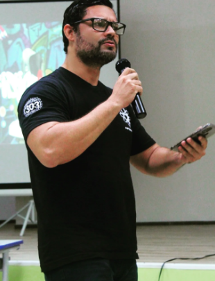

Leitura e interpretação
Compreender informações, identificar ideias principais, reconhecer intenções e construir sentidos a partir de diferentes textos.
Um espaço dedicado à Língua Portuguesa, à leitura, à escrita e à comunicação — com o professor Jeovanne.


A língua é muito mais do que regras: é expressão, identidade e conexão.
Este portfólio apresenta o componente curricular de Língua Portuguesa e reúne temas importantes para a formação dos estudantes. A proposta é valorizar a leitura, a interpretação de diferentes textos, a escrita e o uso consciente da linguagem em situações do cotidiano.
O espaço pode ser utilizado para organizar conteúdos estudados em sala, registrar aprendizagens e incentivar a curiosidade pela língua e pela literatura.
Conhecer a língua é conquistar novas maneiras de pensar, criar e se comunicar.
Conteúdo institucional demonstrativo; informações biográficas específicas podem ser acrescentadas pelo professor.
O componente desenvolve habilidades essenciais para compreender mensagens, expressar ideias com clareza e participar de diferentes situações sociais.
Compreender informações, identificar ideias principais, reconhecer intenções e construir sentidos a partir de diferentes textos.
Planejar, escrever, revisar e aprimorar textos adequados ao objetivo, ao gênero textual e ao público leitor.
Estudar ortografia, pontuação, classes de palavras e organização das frases dentro de situações reais de comunicação.
Desenvolver a escuta, a apresentação de ideias, o diálogo respeitoso e a construção de argumentos.
Selecione um tema para ver um resumo introdutório.
Os gêneros textuais são formas de comunicação usadas em diferentes situações, como notícias, crônicas, cartas, entrevistas, poemas e reportagens. Cada gênero tem características, objetivos e leitores próprios.
Escolha dois textos do cotidiano e compare a finalidade, a linguagem, a estrutura e o público de cada um.
A aprendizagem se fortalece com a prática constante. Algumas atitudes simples ajudam a desenvolver autonomia e confiança no uso da língua.
A Língua Portuguesa está presente em tudo o que lemos, pensamos e comunicamos.
Voltar ao início ↑